La tasa de desempleo llega al 4,9% , la más alta desde 1945.
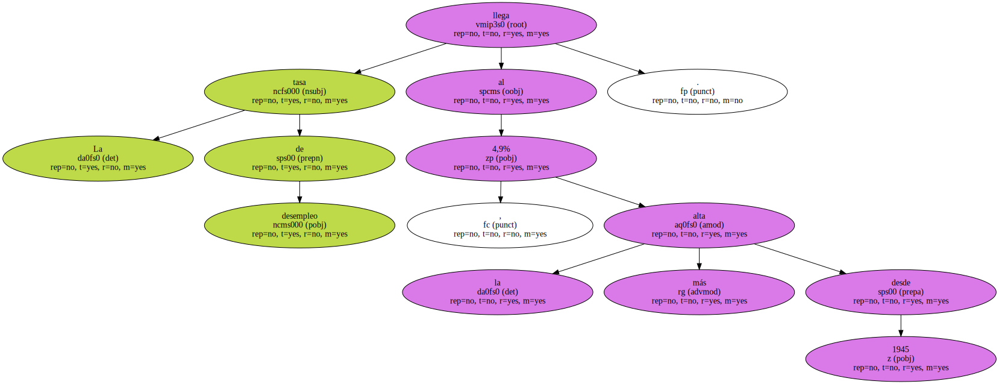El paro japonés alcanzó un nuevo récord histórico en Febrero y la tasa de desempleo se elevó hasta el 4,9% de la población activa.
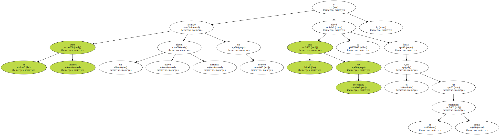Este es el nivel de paro más alto desde la segunda guerra mundial y los expertos prevén que siga aumentando en los próximos meses.
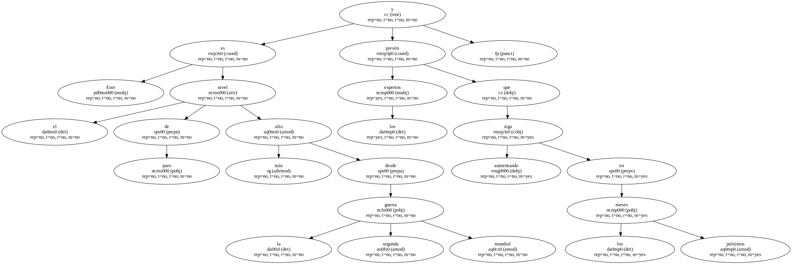La economía japonesa se encuentra en recesión.

Japón , considerado tradicionalmente como un país con una tasa de paro insignificante , contaba a finales de Febrero con 3,27 millones de demandantes de empleo , lo que supone 180.000 personas más que en enero.

Una de las razones de este aumento del paro son los planes de reestructuración llevados a cabo por algunas de las grandes empresas japonesas.
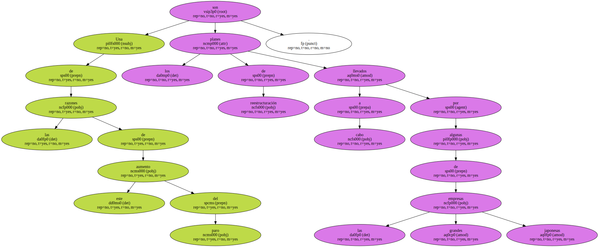De los 3,27 millones de parados , un total de 1,15 millones se han visto obligados a abandonar involuntariamente su trabajo.
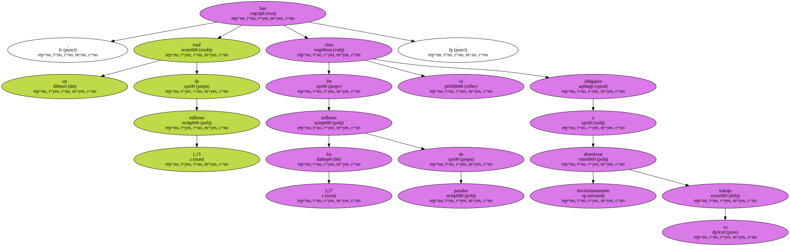El Gobierno prevé que los próximos meses sean malos en materia de empleo , ya que espera que se incorporen al mercado laboral los nuevos licenciados en las universidades debido a que el año escolar acaba de terminar.
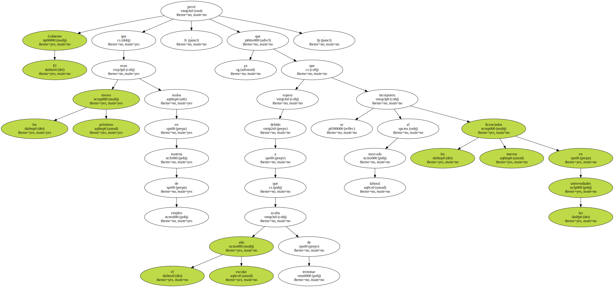El paro en Japón afecta en mayor medida a los hombres , que han superado la barrera del 5% situándose en Febrero en el 5,1%.
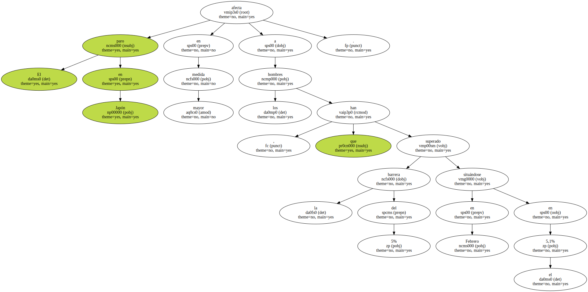El paro en Japón afecta en mayor medida a los hombres , que han superado la barrera del 5% situándose en Febrero en el 5,1%.
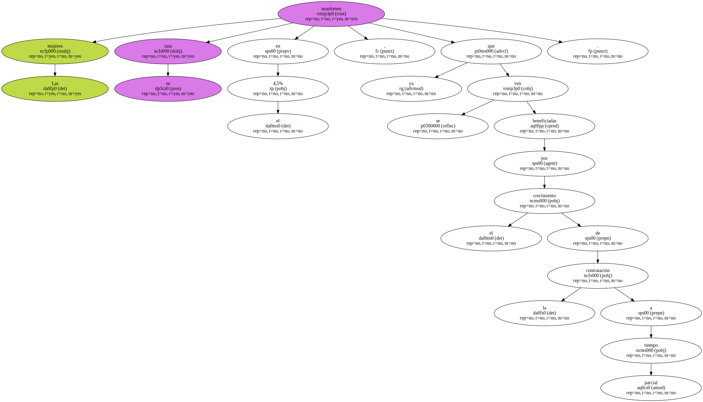Las mujeres mantienen su tasa en el 4,5% , ya que se ven beneficiadas por el crecimiento de la contratación a tiempo parcial.
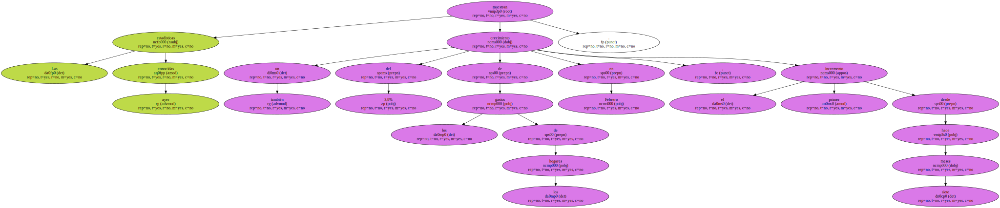Las estadísticas conocidas ayer muestran también un crecimiento del 3,8% de los gastos de los hogares en Febrero , el primer incremento desde hace siete meses.
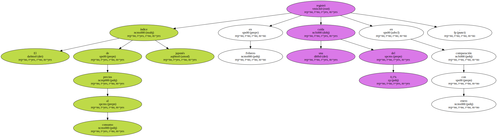El índice de precios al consumo japonés registró en Febrero una caída del 0,1% en comparación con enero.
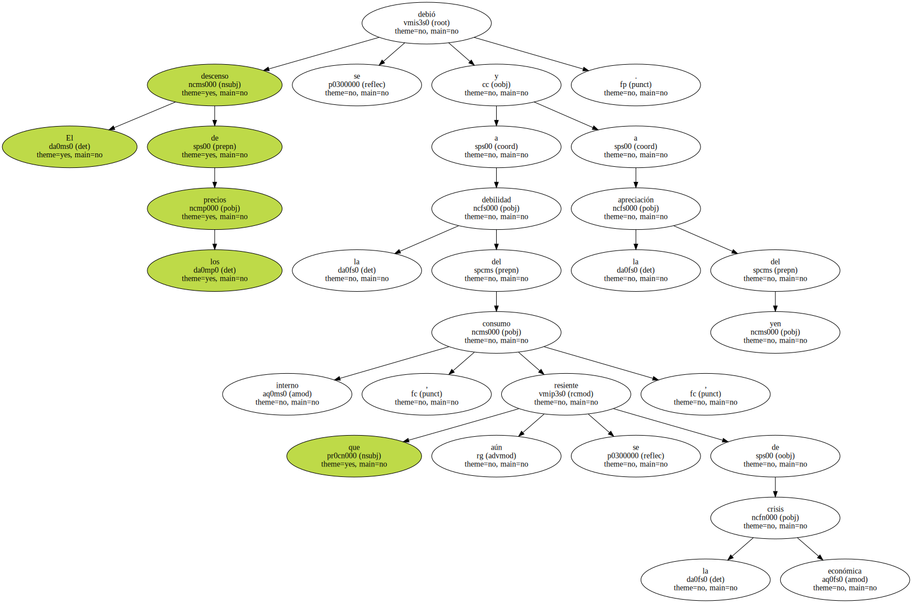El descenso de los precios se debió a la debilidad del consumo interno , que aún se resiente de la crisis económica , y a la apreciación del yen.
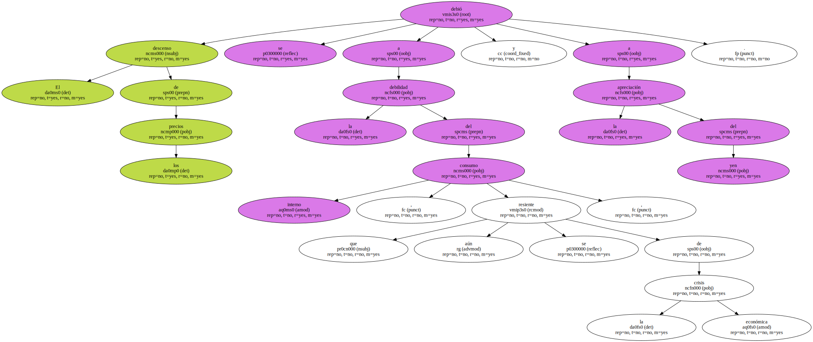